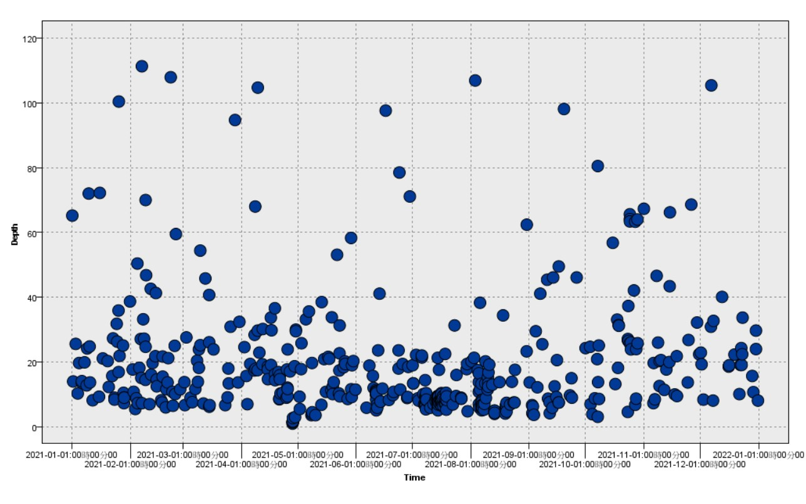

地震報導
POWER BI
R 分析
SPSS Modeler
Python 分析
connect SQL into SPSS Modeler . 名稱 [spss@localhost]
SPSS 顯示 .
進行選擇會用到的物件 名稱 [過濾器]
顯示[過濾器]
於時間 , 規模 , 深度 來顯示3D圖
顯示3D圖 360*
於規模 , 規模 來顯示逗點圖
顯示逗點圖
於時間 , 深度 來顯示線型
顯示線型
於規模 , 深度 來顯示逗點圖
顯示逗點圖

深度 , 規模 來顯示逗點圖
顯示逗點圖
深度 , 規模 來顯示逗點圖
顯示逗點圖